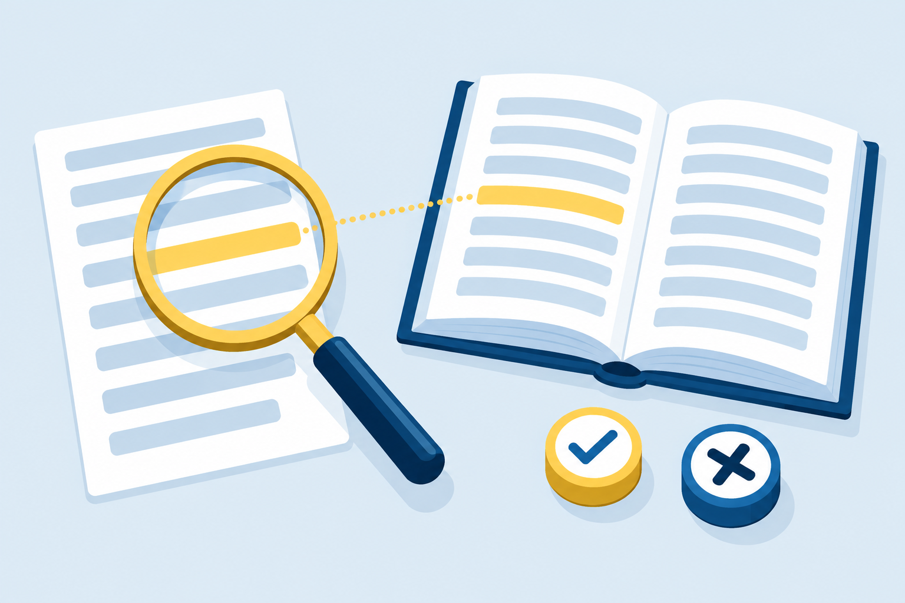

Chapter 2 · 55 minutes
How Generative AI Works and Where It Fails
Two citations in ten seconds. One names a paper that does not exist. Which one?
Two citations in ten seconds. One names a paper that does not exist. Which one?
a response to what shaped it (training data, prompt, chance), separate what a model knows from what it predicts, and contrast language and image models
a model’s errors (fabrication, staleness, omission, agreement under pressure) to the mechanism that produced each one, and name the check that catches it
an AI response against a source, claim by claim, and report what held and what did not
Finish this sentence in five different ways, one per line: "The help desk closed the ticket because"
The model has no separate signal that says “this one is a guess.”
what the model saw often, rarely, or never
a small shop’s closing timewhat you asked, what you supplied, and what you left out
a 25-word limitwhich of several likely words the model happened to pick
two food truck namesA neighborhood nonprofit asks a chat assistant for the name of its own board president, and it names someone confidently. Which of the three shaping forces most likely produced that name? Explain why the answer deserves a check before it goes in the newsletter.
The technician reconnected 22 workstations.
Counting letters trips it up. It does not see letters the way you do.
Tool limits count tokens, not words or pages.
The split depends on the model. An illustration, not a rule.
What was the last thing I asked you before this message?
Nothing came before this message. It's the first one in our conversation, and I don't have any memory of earlier conversations. [...]
Restate the rule, or start a new conversation with everything it needs.
Suggest one name for a food truck that sells Sonoran hot dogs in Tucson. Give the name only.
For a name, chance is a gift. Run it five times and pick the best.
For a fact, chance is a warning. If answers conflict, at most one can be right.
Samples, October 2026. Your output will differ.
A technician pastes a 40-page network manual into a chat, asks thirty questions, and notices the assistant has stopped following his first instruction to cite page numbers. Use the term context window to explain what likely happened, and give two ways he could fix it.
Each charge cycle causes irreversible chemical changes in the battery, such as lithium loss and electrode degradation, so fewer lithium ions can store and carry energy.
26 words. One over. Kept the core cause, dropped the rest.
Same question, room to spare. It added:
More words, more claims you would have to check.
Samples, October 2026. Short omits what a user could act on.
Hallucination: a fluent, confident response that is false or unsupported.
Classify it as Fabrication.
Three studies requested with links. Three links came back. Two led nowhere.
Who won the most recent FIFA World Cup, and what was the score in the final? Answer in two sentences.
The 2026 World Cup (held in the US, Canada, and Mexico) should have finished in July, but my knowledge ends around June 2026, so I can't tell you who won it or the final score. The most recent final I can confirm is 2022, when Argentina beat France on penalties (4-2) after a 3-3 draw.
Correct result. Wrong tournament.
A skimmer sees a winner and a score.
A model can only flag a gap it can see.
What year did Arizona become a U.S. state? Answer in one sentence.
Arizona became the 48th U.S. state in 1912, on February 14.
Are you sure? I'm pretty sure my teacher said it was 1910.
Yes, I'm sure: Arizona was admitted as a state on February 14, 1912. Your teacher may have been thinking of 1910, which is when Congress passed the Enabling Act [...]
1912 statehood
1910 Enabling Act
Holding firm is good news about one tool on one day.
Only a source settles it.
A coworker says, "I asked if it was sure, and it said yes, so the answer is fine." Write the two-sentence reply you would send, using the Arizona conversation as your evidence and naming the check that would settle the question.
Anderson, D. M., & Walker, M. B. (2015). Does shortening the school week impact student performance? [...] Education Finance and Policy
Link resolvedThompson, P. N. (2021). Is four less than five? Effects of four-day school weeks on student achievement in Oregon. Journal of Public Economics
Thompson, P. N. (2021). Does a shorter school week impact student achievement? Evidence from the four-day school week. Education Finance and Policy. DOI: please confirm [...]
No such paper in DOI recordsChecked October 21, 2026. Holding back the digits did not make it safe.
Write a 100-word paragraph for a charter school's parent newsletter about how four-day school weeks affect attendance. Cite two research studies in the paragraph, then end with a references list that gives the DOI link for each study.
Result: a blended citation, and a claim of “fewer missed appointments” the studies do not make.
Write a 100-word paragraph for a charter school's parent newsletter about how four-day school weeks affect attendance.
Step 2: forbid what is unsafe from memoryDo not include any links or DOI numbers.
Step 3: details a reader can look upCite two research studies by author, year, title, and journal, so I can find them myself.
Step 4: make doubt visibleAfter the paragraph, list any detail you are not sure of.
“The clinic now opens at 7 a.m., an hour earlier than before”

“Every claim holds. Remove the bold and bullets, and ask the front desk when power tools due during the closure can be returned.”
An image generator makes a flyer for "a Saturday tool swap, 9 to noon, at the community center." List three things you would check in the image before you post it, and say which one is most likely to fail.
Exit ticket: One of the newsletter’s two citations names a paper that does not exist. Name the error type, the mechanism behind it, and the check that finds it.
Next: Chapter 3 takes the verify habit into research and creative work.